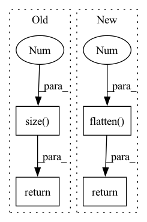

Pattern ID :31522
Before Change
if self.drop_rate > 0.:
x = F.dropout(x, p=self.drop_rate, training=self.training)
out = self.classifier(x)
return out.view(out.size(0 ) , -1)
@register_modelAfter Change
if self.drop_rate > 0.:
x = F.dropout(x, p=self.drop_rate, training=self.training)
out = self.classifier(x)
return out.flatten(1 )
@register_model
def dpn68(pretrained=False, num_classes=1000, in_chans=3, **kwargs):In pattern: SUPERPATTERN
Frequency: 3
Non-data size: 4
Instances Fragment ID: 92175510
Project Name: feng-lab/pytorch-image-models
Commit Name: 3bef524f9c45a713eabce808124c9fc5ac0971a0
Time: 2019-11-29
Author: rwightman@gmail.com
File Name: timm/models/dpn.py
M Class Name: DPN
N Class Name: DPN
M Method Name: forward(2)
N Method Name: forward(2)
M Parent Class: nn.Module
N Parent Class: nn.Module
M File Name: timm/models/dpn.py
N File Name: timm/models/dpn.py
M Start Line: 245
M End Line: 246
N Start Line: 240
N End Line: 245
Before Change
out = F.relu(self.bn2(self.conv2(out)))
// NOTE: change pooling kernel_size 7 -> 4 for CIFAR10
out = F.avg_pool2d(out, 4)
out = out.view(out.size(0 ) , -1)
out = self.linear(out)
return out
def test():After Change
def forward(self, x: Tensor) -> Tensor:
x = self.features(x)
x = nn.functional.adaptive_avg_pool2d(x, (1, 1))
x = torch.flatten( x, 1 )
x = self.classifier(x)
return x
def _initialize_weights(self) -> None:
for m in self.modules(): Fragment ID: 92175511
Project Name: tuttelikz/farabio
Commit Name: 1d44294f1fa3a0a8cd95bdbad9f2e4f53b43098b
Time: 2021-08-02
Author: s.askaruly@gmail.com
File Name: farabio/models/classification/conv/mobilenetv2.py
M Class Name: MobileNetV2
N Class Name: MobileNetV2
M Method Name: forward(2)
N Method Name: forward(2)
M Parent Class: nn.Module
N Parent Class: nn.Module
M File Name: farabio/models/classification/conv/mobilenetv2.py
N File Name: farabio/models/classification/conv/mobilenetv2.py
M Start Line: 69
M End Line: 77
N Start Line: 134
N End Line: 139
Before Change
def forward(self, pred, target):
log_prob = F.log_softmax(pred, dim=-1)
dist = torch.empty_like(pred).fill_(self.smoothing / (pred.size(-1 ) - 1))
dist.scatter_(dim=-1, index=target[..., None], value=(1 - self.smoothing))
loss = F.kl_div(log_prob, dist)
return loss
After Change
def forward(self, pred: torch.Tensor, target: torch.Tensor, mask: torch.Tensor):
pred = pred.flatten(0, 1)
target = target.flatten(0, 1)
mask = mask.flatten(0 , 1) .float()
chunked_pred = torch.chunk(pred, chunks=self.chunk, dim=0)
chunked_target = torch.chunk(target, chunks=self.chunk, dim=0)
chunked_mask = torch.chunk(mask, chunks=self.chunk, dim=0)
log_prob = [F.log_softmax(p, dim=-1) for p in chunked_pred]
loss = [self.smoothed_loss(p, t, m)[None]\
for p, t, m in zip(log_prob, chunked_target, chunked_mask)]
loss = torch.cat(loss, dim=0).sum()
return loss / mask.sum()
def smoothed_loss(self, log_prob: torch.Tensor, target: torch.Tensor, mask: torch.Tensor) -> torch.Tensor:
dist = torch.full_like(log_prob, fill_value=self.smoothing / (self.vocab - 2)) Fragment ID: 92175508
Project Name: rick-mccoy/reformer-pytorch
Commit Name: 3411114d22e0bfcae2e106f5c82a3211da83f409
Time: 2020-02-29
Author: rickmccoy3141@gmail.com
File Name: model/labelsmoothing.py
M Class Name: LabelSmoothing
N Class Name: LabelSmoothing
M Method Name: forward(4)
N Method Name: forward(3)
M Parent Class: nn.Module
N Parent Class: nn.Module
M File Name: model/labelsmoothing.py
N File Name: model/labelsmoothing.py
M Start Line: 11
M End Line: 16
N Start Line: 13
N End Line: 24